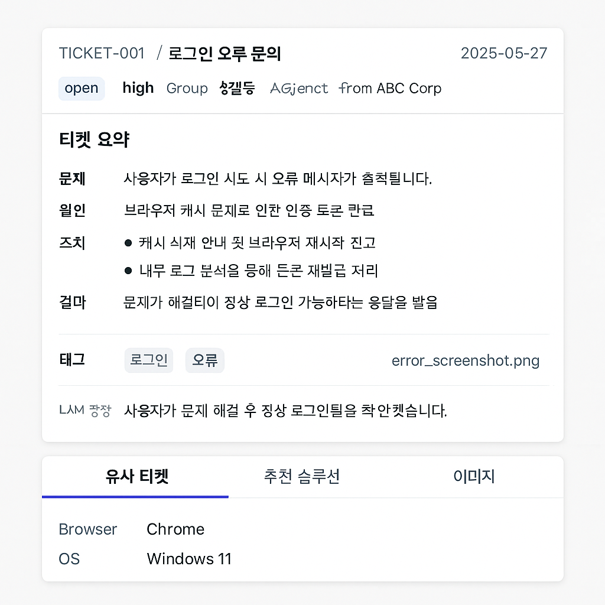

🤖 프롬프트 캔버스
프롬프트 캔버스는 Freshdesk에서 효과적인 LLM 프롬프트를 작성하고 관리하는 도구입니다.
기본 정보
AI 응답 작성

이 도구를 사용하여 LLM 프롬프트를 효과적으로 관리하고 응답을 생성할 수 있습니다.
AI 티켓 응답 작성
AI가 고객 문의에 대한 응답을 작성하는 것을 도와드립니다. 제안된 텍스트를 수정하거나 탭 키를 눌러 제안을 수락할 수 있습니다.
🔍 자동완성 테스트
자동완성 테스트하기
테스트 결과: